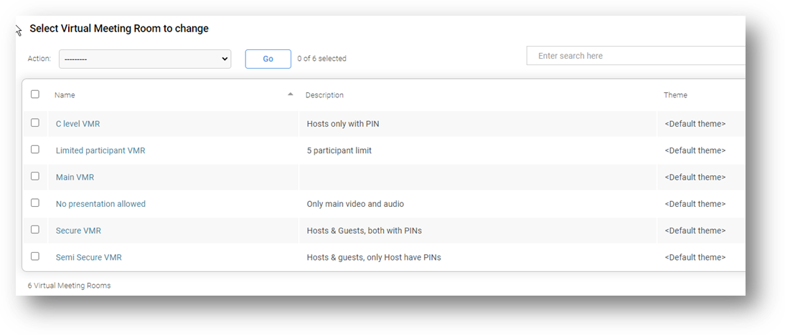

Suggested completion time: 30 minutes
Use section #4.2 of the lab sheet.
Before configuring some of the Infinity services that handle conferences and other call types, it's good to recap what firewall configuration changes are required to allow external endpoints and systems to connect to Infinity.
Configure Virtual Meeting Rooms (VMRs) via the Services menu: Services --> Virtual Meeting Rooms.
Create a secure VMR to allow only users with the correct PINs to enter the VMR. You will enable both hosts and guests to enter; both require a PIN. Hosts can manage the conference whilst guests simply participate:
Save and wait for sync before placing test calls to the VMR alias.
Create a semi-secure VMR allowing easy access for guests:
Create a secure VMR only for C level users:
Create a VMR to show two main speakers but do not allow presentation:
Create a VMR to show participant names and limit the room capacity to 3:
To set the default layout on any of the VMRs to use Adaptive Composition, in the main VMR configuration section, set "View" to "Adaptive composition (automatic face detection and framing)". You should also review other available layouts.
When you have created all the VMRs, test all the services. Be sure to connect multiple endpoints using the PexEPs, adding PINs if required. You might want to go beyond our steps and try out other options and layouts.
Your VMR services should look as follows:
